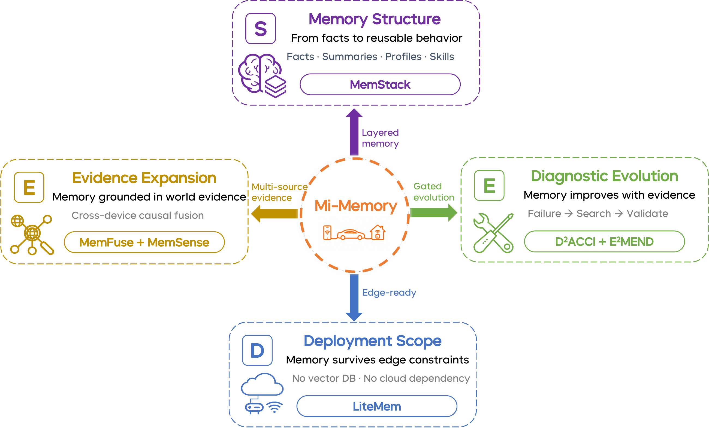

Structure
Memory runtime, storage hierarchy, retrieval, filtering, and context assembly for multi-granularity state.
A Lifecycle Memory Framework for Personal AI that turns memory from a conversation cache into auditable, multi-source, governable user-state infrastructure.
Personal AI is moving beyond chat-only interaction toward continuous services across phones, cars, homes, wearables, cameras, and tools. In this setting, memory must preserve durable user state, connect answers to multimodal evidence, support correction and forgetting, bound policy evolution, and remain deployable across edge/cloud constraints.
Memory runtime, storage hierarchy, retrieval, filtering, and context assembly for multi-granularity state.
Multimodal and cross-device evidence acquisition with source identity, provenance, and fusion contracts.
Diagnostic iteration, governed strategy updates, feature gates, rollback records, and auditable improvement.
Substrate-independent memory variants for cloud, edge, and lightweight local environments.
Mi-Memory links structure, expansion, evolution, and deployment through typed evidence payloads, diagnostic traces, strategy artifacts, and gate/rollback records. The same artifact families support research diagnostics and product-facing memory governance.

Lifecycle overview: Structure, Expansion, Evolution, and Deployment are connected by auditable memory artifacts.
Correction, forgetting, and policy updates are treated as first-class lifecycle events rather than ad hoc prompt patches.
Retrieval and context assembly preserve where memory came from, why it was selected, and how it can be inspected.
The report grounds the lifecycle with a human-car-home training handoff: a parent, a car route, a phone calendar, and a home camera jointly determine whether the assistant should remind the family about a basketball bag before entering the expressway.
The report evaluates Mi-Memory across structure benchmarks, expansion modules, governed offline evolution, and deployment transfer. These numbers are evidence anchors rather than a single leaderboard; the PDF is authoritative for protocols and boundaries.
Mi-Memory is an initial step toward personal-AI memory that can be measured, governed, and improved across its full lifecycle.
Future work targets stronger answer-to-evidence tracing and propagation-complete forgetting across derived summaries, profiles, and caches.
Cross-device memory composition, scalable diagnostic evolution, and shared memory interfaces remain key research directions.
If this report is useful for your research or product work, please cite Mi-Memory.
@techreport{mimemory2026,
title = {Mi-Memory: A Lifecycle Memory Framework for Personal AI},
author = {Darwin Agent Team},
institution = {Xiaomi},
year = {2026},
url = {https://arxiv.org/abs/2607.18975}
}